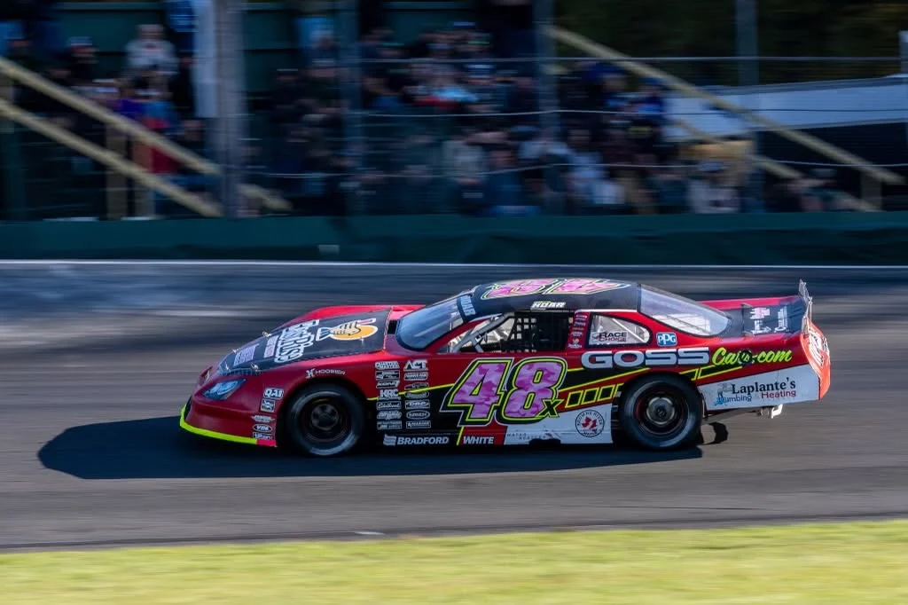

Sponsorship series · EastRise · 2025
A race season told through people, place, and history.
I treated the Taylor Hoar sponsorship as an editorial series, not a logo placement. Race-day photography, portraits, short-form posts, and Thunder Road history gave the partnership a reason to matter between events.
The 2025 Milk Bowl
Taylor raced in Tracie Bellerose’s colors, connecting a current driver with the woman who became the first to qualify for the Milk Bowl on her own merit 25 years earlier.


